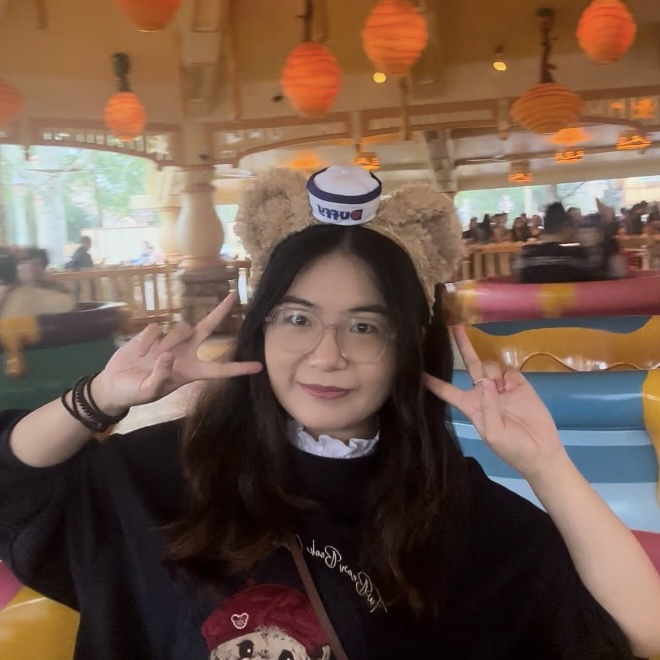

Hello, I'm Wei Fei 👋
我是 魏菲
聚焦多模态大模型、Agent 与计算机视觉，从研究到落地优化模型与系统表现。

关于我
从计算机视觉起步，逐步扩展到多模态大模型、端侧大模型与 Agent 系统的算法工程师。
本科与研究生阶段主要在 IIAU-Lab 做计算机视觉方向的研究，围绕失焦模糊检测与去模糊等课题，在 ECCV、TMM、TNNLS 等期刊与会议发表多篇论文。
2022 年起进入工业界从事算法工程工作，先后在多家团队围绕 AutoML、3D 感知、多模态大模型、端侧大模型等方向做探索与落地，负责从数据、建模到系统集成与效果优化的完整链路。
日常使用 Python + PyTorch 进行建模与实验，也会亲自落地工程化与性能调优，希望把前沿研究变成真正有用、可维护、可迭代的产品能力。
当前关注
- 多模态大模型与 Agent 在视觉理解、交互和决策中的应用
- 3D 感知算法在自动驾驶与泛视觉任务中的效果与效率提升
- AutoML / 数据与训练流程自动化，降低大模型开发门槛
偏好技术栈
以 Python + PyTorch 为主，配合常用深度学习与工程工具，关注从模型到系统的端到端优化。
经历
教育 / 研究 / 工业界经历的简要时间线。
多模态理解 & Agent · 算法工程师
多模态理解 / Agent 系统
- 聚焦多模态理解与 Agent 方向的技术探索与实践，将视觉、文本等多模态信号融合到具体业务场景。
- 参与多模态 Agent 的整体方案设计与实现，从模型选择、能力编排到线上效果评估与迭代。
多模态 & 端侧大模型 · 算法工程师
多模态 / 端侧大模型 / 视觉基座模型
- 在多模态大模型、端侧大模型、视觉基座模型等前沿方向进行技术探索和落地实践。
- 关注模型在实际业务中的效果、性能和部署成本，探索适合端侧与线上场景的模型方案。
大连理工大学 · 本科 & 硕士
计算机相关专业 · IIAU-Lab
- 本科阶段系统学习计算机相关课程，为后续视觉与多模态研究打下基础。
- 硕士阶段在 IIAU-Lab 围绕失焦模糊检测与去模糊开展系列研究，发表多篇相关论文。
论文
- R Li, H Huang, F Wei, F Xiong, Y Wang, X Chu. AdaCuRL: Adaptive Curriculum Reinforcement Learning with Invalid Sample Mitigation and Historical Revisiting. arXiv preprint arXiv:2511.09478, 2025.
- X Zhang, F Wei, Y Wang, W Zhao, F Li, X Chu. UPRE: Zero-Shot Domain Adaptation for Object Detection via Unified Prompt and Representation Enhancement. arXiv preprint arXiv:2507.00721, 2025.
- F Wei, X Zhang, A Zhang, B Zhang, X Chu. Lenna: Language Enhanced Reasoning Detection Assistant. ICASSP 2025, 2025.
- M Kang, X Zhang, F Wei, S Xu, Y Liu. Enhancing Image Editing with Chain-of-Thought Reasoning and Multimodal Large Language Models. ICASSP 2025, 2025.
- X Chu, H Huang, X Zhang, F Wei, Y Wang. GPG: A Simple and Strong Reinforcement Learning Baseline for Model Reasoning. arXiv preprint arXiv:2504.02546, 2025.
- X Zhang, M Kang, F Wei, S Xu, Y Liu, L Ma. TIE: Revolutionizing Text-based Image Editing for Complex-Prompt Following and High-Fidelity Editing. arXiv preprint arXiv:2405.16803, 2024.
- X Chu, L Qiao, X Zhang, S Xu, F Wei, Y Yang, X Sun, Y Hu, X Lin, ... MobileVLM V2: Faster and Stronger Baseline for Vision Language Model. arXiv preprint arXiv:2402.03766, 2024.
- X Chu, L Qiao, X Lin, S Xu, Y Yang, Y Hu, F Wei, X Zhang, B Zhang, X Wei, ... MobileVLM: A Fast, Strong and Open Vision Language Assistant for Mobile Devices. arXiv preprint arXiv:2312.16886, 2023.
- W Zhao, G Hu, F Wei, H Wang, Y He, H Lu. Attacking Defocus Detection With Blur-Aware Transformation for Defocus Deblurring. IEEE Transactions on Multimedia (TMM), 2023.
- W Zhao, F Wei, H Wang, Y He, H Lu. Full-Scene Defocus Blur Detection With DeFBD+ via Multi-Level Distillation Learning. IEEE Transactions on Multimedia (TMM), 2023.
- X Chu, L Qiao, X Lin, S Xu, Y Yang, Y Hu, F Wei, X Zhang, B Zhang, X Wei. MobileVLM: A Fast, Reproducible and Strong Vision Language Assistant for Mobile Devices. arXiv preprint arXiv:2312.16886, 2023.
- W Zhao, M Wang, F Wei, H Wang, Y He, H Lu. Defocus Blur Detection Attack via Mutual-Referenced Feature Transfer. IEEE Transactions on Neural Networks and Learning Systems (TNNLS), 2022.
- W Zhao, F Wei, Y He, H Lu. United Defocus Blur Detection and Deblurring via Adversarial Promoting Learning. European Conference on Computer Vision (ECCV), 2022.
全部论文列表及引用信息请见 Google Scholar： Google Scholar · Wei Fei。
联系我
如果你对我的工作或论文感兴趣，欢迎通过以下方式联系。
- GitHub @weifei7
- Email fwei_mail@163.com
- Phone 18742516107
- Google Scholar Scholar · Wei Fei